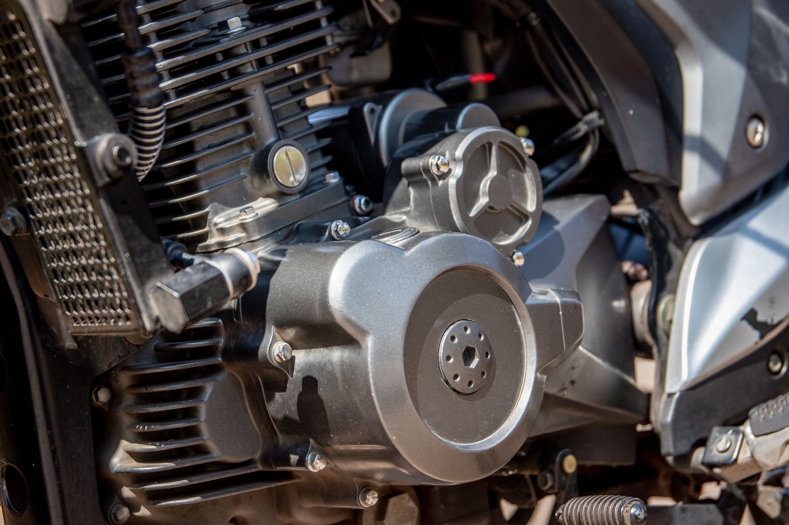

中 광물통제, 가격교란 넘어 공급망 구조해체 단계 진입

중국 상무부는 2025년 7월 1일 공고 제26호를 시행해 전략 광물 이중용도 품목의 불법·부정 수출 신고 체계를 정비했다. 이는 기존 수출허가제의 '집행 강화' 단계로, 신고 누락 시 형사처벌 조항이 추가됐다. 단순 가격 제어를 넘어 거래 경로 자체를 추적·차단하는 구조로 바뀐 것이다.
통제 대상은 반도체·디스플레이 소재(갈륨·게르마늄·인듐)에서 AI 서버 냉각재(헬륨·열전도성 합금), 산업용 로봇 영구자석(네오디뮴·디스프로슘 희토류)까지 확산됐다. 인더스트리뉴스 분석에 따르면 중국이 통제 품목으로 추가 검토 중인 소재는 최소 23종으로 파악된다.
갈륨의 경우 중국은 일본향 수출을 4개월 만에 재개하면서 게르마늄은 여전히 봉쇄를 유지하고 있다. 이는 '무기화'가 일괄 차단이 아니라 국가별·품목별 차별 통제라는 것을 보여준다. 중국의 게르마늄 글로벌 점유율은 60% 이상, 갈륨은 95% 이상이다.
AI·로봇 산업으로의 확전이 의미하는 바는 명확하다. 산업용 로봇 구동모터에 쓰이는 네오디뮴 자석(NdFeB)의 중국 생산 점유율은 90% 이상이다. AI 서버 냉각에 쓰이는 헬륨 역시 중국이 주요 생산국이며, 대체 소싱 루트는 미국·카타르 두 곳으로 극도로 제한적이다.
공급망 구조 해체 단계에서는 '재고 비축'으로 버티는 전략이 한계에 부딪힌다. 가격 교란기에는 물량을 쌓아두면 됐지만, 거래처 선별 봉쇄가 작동하면 특정 국가·기업은 아예 계약 자체를 맺지 못하게 된다. 이것이 2단계 통제의 핵심이다.
한국 입장에서 가장 위험한 국면은 AI 서버·산업로봇 소재가 동시에 봉쇄되는 시나리오다. 삼성·LG·현대로보틱스 등 로봇·AI 인프라 투자를 확대하는 기업들이 네오디뮴 자석·헬륨 가스·갈륨 기반 화합물 반도체를 동시에 외부 조달해야 하는 구조에 놓여 있다.
캐나다·호주 광물 기업: 갈륨(캐나다 Teck Resources), 게르마늄(독일 Umicore·벨기에 생산), 희토류(호주 Lynas) 등 중국 외 생산국 기업이 프리미엄 가격에 장기계약을 체결하는 기회를 잡고 있다. Lynas의 2024년 희토류 매출은 전년 대비 18% 증가했다.
한국 고려아연: 아연 제련 부산물 기반 갈륨·게르마늄 국내 생산 체계를 구축 중이다. 2028년 연 15.5t 갈륨 양산이 확정되면 국내 반도체·LED 업체의 중국 의존 일부를 대체할 수 있다.
한국 AI 서버·로봇 제조사: 네오디뮴 자석·헬륨 가스·갈륨 화합물 반도체를 동시에 외부 조달해야 하는 구조에서 소재비 상승 압력이 복합적으로 작용한다. 산업용 로봇 1대당 네오디뮴 자석 사용량은 평균 2~5kg이다.
중소 수입상: 중국 공고 제26호 시행으로 비공식 루트를 통한 소량 조달이 사실상 불가능해졌다. 기존에 묵인됐던 '회색 경로' 거래가 형사처벌 대상이 되면서 소규모 조달 기업의 리스크가 급등했다.
공급망 리스크 관리 담당자는 지금 당장 조달 품목 중 '중국 점유율 70% 초과' 소재를 별도 관리 리스트로 분리해야 한다. 갈륨·게르마늄·네오디뮴·헬륨·인듐이 1순위 대상이다.
국가별 차별 통제 패턴을 분석하면 중국이 '선별 봉쇄' 대상으로 삼는 국가·기업 기준이 드러난다. 일본이 갈륨을 재개받은 이유는 외교적 협상 카드 교환으로 추정된다. 한국은 반도체 수출통제 협력 수준에 따라 유사한 협상이 가능한지 검토할 시점이다.
실제 조달 현장에서는 — 중국 거래처가 '공고 26호' 이후 서류 요건을 대폭 강화하면서 기존 3~5일이던 수출허가 처리 시간이 3~6주로 늘어난 사례가 보고된다. 이 지연이 생산 라인에 미치는 영향을 고려하면, 최소 6개월분 전략 재고 확보가 현장 표준으로 자리 잡아야 한다.
이 포스팅은 쿠팡 파트너스 활동의 일환으로 수수료를 제공받습니다.